Browse, search, and diff — without leaving your repo
Git Navigator's Files activity is a worktree-scoped tree with built-in git status badges, CodeMirror-powered file and diff views, and a search box that flips between filename filter and git grep with a single click. Same window, same worktree context, no terminal.
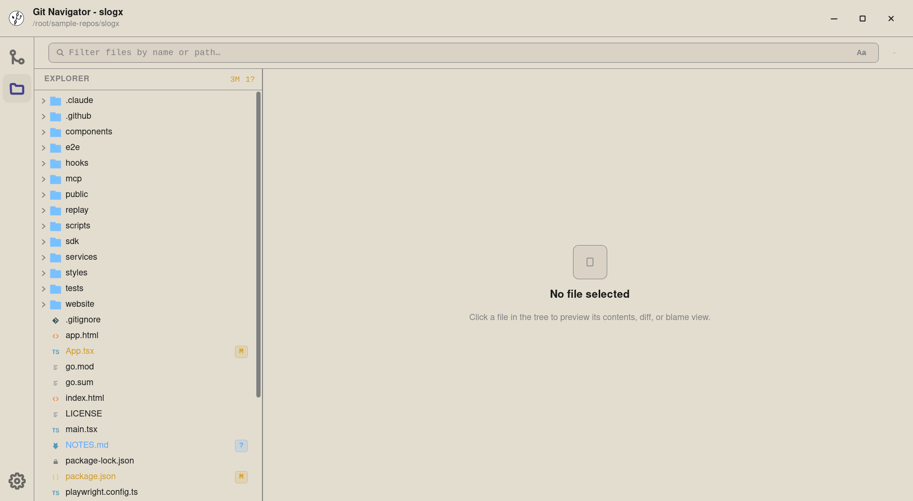
Why the Files activity exists
Worktree-scoped tree with status badges
The tree follows the active worktree — switching worktrees re-targets it cleanly. Every row carries an inline M / A / ? badge, and the explorer header counts what's dirty across the whole repo.
Diff opens automatically for changes
Click a modified file and Git Navigator drops you straight into the diff view. Clean files open in a CodeMirror file view; markdown and HTML files also offer a side-by-side preview.
Filename filter and content grep in one box
The toolbar search starts in filename-filter mode (Aa) — type a path fragment and the tree narrows with ancestors auto-expanded. Click the toggle and the same query becomes a git grep, results grouped by file with line and column hits.
Worktree-aware refresh and resize
Built-in refresh stays scoped to the active worktree. The tree pane is drag-resizable with a persisted width, and the preview pane reflows around it.
Walkthrough
-
Step 1. The Files activity opens a worktree-scoped tree alongside the graph. The header counts modifications across the whole repo (M, A, ?), and each row carries an inline badge so dirty files stand out at a glance. -
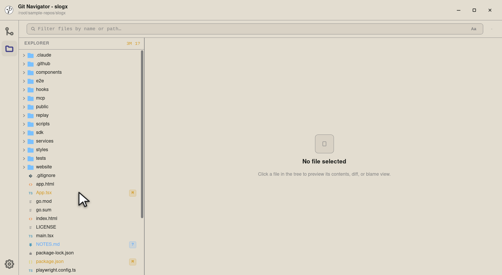
Step 2. App.tsx has been edited — the inline M badge mirrors the uncommitted-changes panel from the graph, but at file granularity. The badge colour matches the status: modified, added, untracked, or conflicted. -
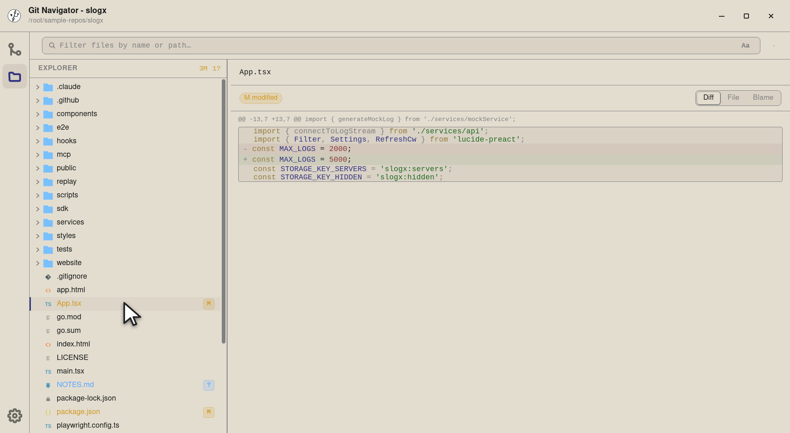
Step 3. Selecting a file with changes opens it straight into the diff view — hunks line up against the file as it was at HEAD. Clean files default to the file view; conflicted files default to the conflict resolver. -
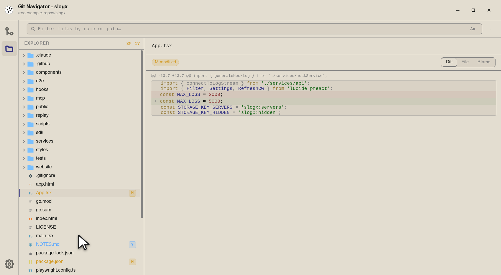
Step 4. A clean code file — no badge. Selecting one of these jumps the preview pane into a CodeMirror file view instead of a diff. -
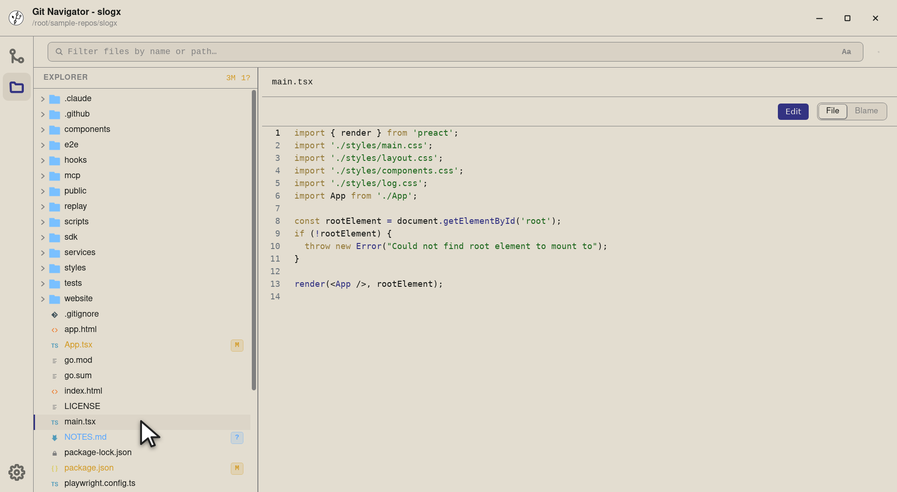
Step 5. Code renders with project-appropriate syntax highlighting, line numbers, and live reflow when the tree pane is resized. The view-mode strip lets you flip into Blame from the same selection. -
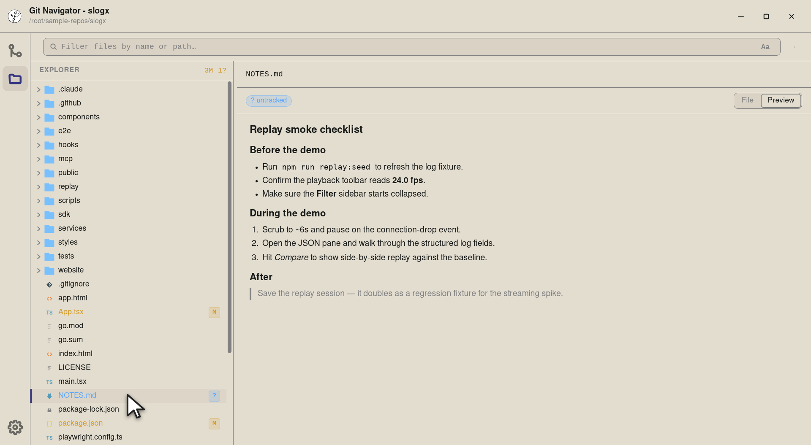
Step 6. Markdown and HTML files open straight into a rendered Preview by default — headings, lists, blockquotes, inline code, everything — with the raw source still one click away on the view-mode strip. Same story for HTML, with a sandboxed iframe and an opt-in to enable scripts.
-
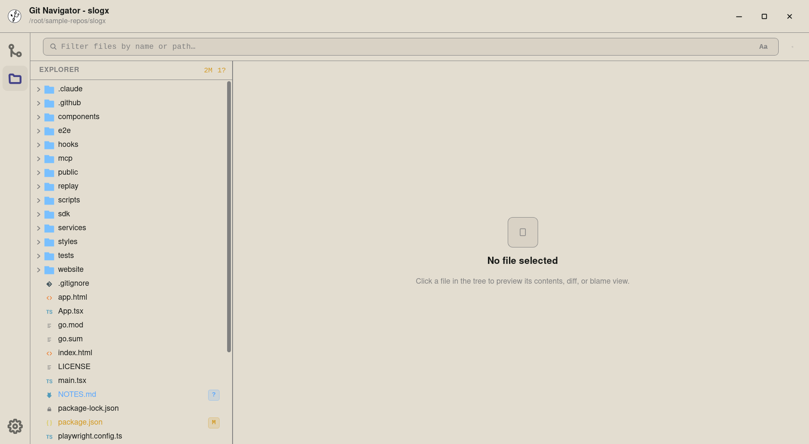
Step 1. The search box at the top of the explorer has two modes: a filename filter (the default, labelled Aa) and a content search (labelled abc) that runs git grepagainst the worktree. -
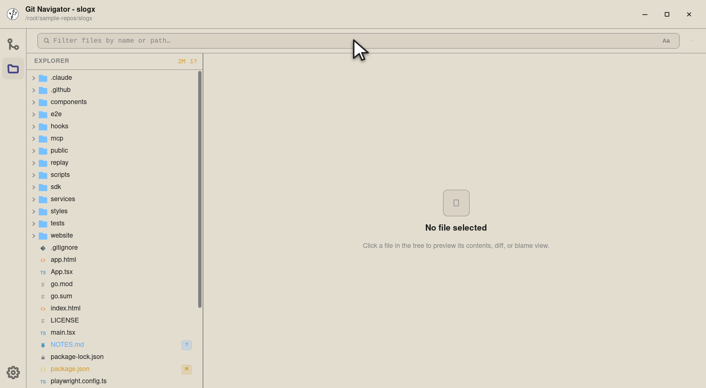
Step 2. Click into the search box to start typing. Filename mode is the cheapest path to "where is the file I'm thinking of?". -
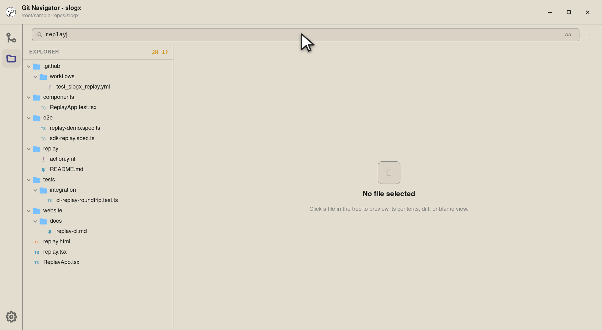
Step 3. Filename filter narrows the tree to entries whose path matches, with ancestors auto-expanded so each hit stays in context. The summary in the explorer header updates to reflect what's left. -
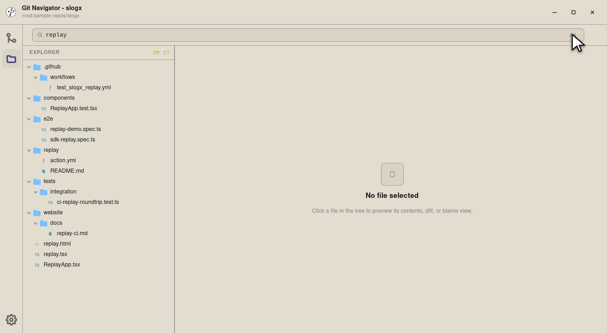
Step 4. Flip the Aa toggle to switch into content search. The toggle is reversible — the query is preserved so you don't have to re-type it. -
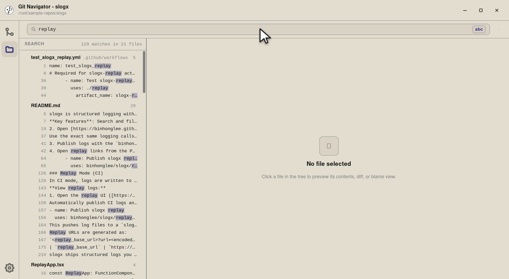
Step 5. The same query re-runs as a git grepagainst the worktree's tracked files. Results group by file with line and column hits inline — click a line to open the file at that exact location, or the file header to open it in the default view.
-
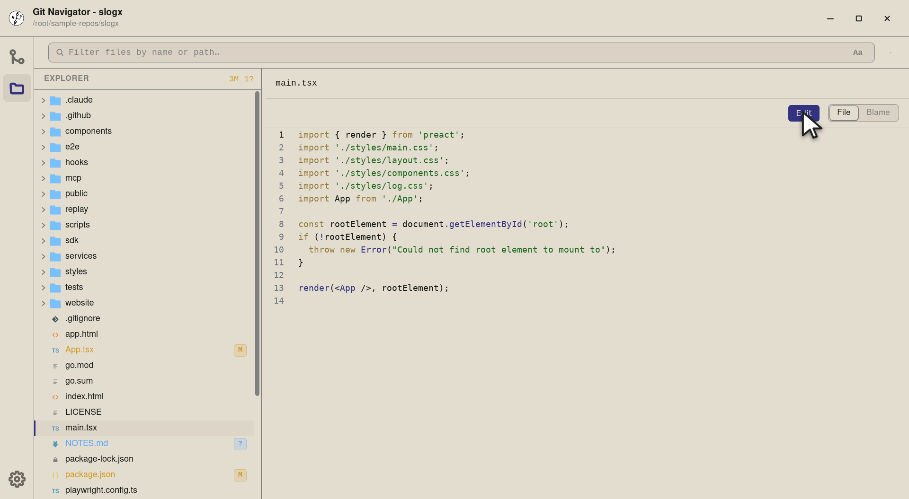
Step 1. Any editable file — text, non-binary, under the size limit — gets an Edit button on the file-view toolbar. The button is hidden for files Git Navigator can't safely round-trip (binary, lossy, or oversized). -
Step 2. The edit overlay opens with the same CodeMirror engine — same syntax highlighting, theme, and scroll position you had in the read-only view. Cmd/Ctrl+S saves; Esc closes (with a discard confirmation if there are unsaved changes). -
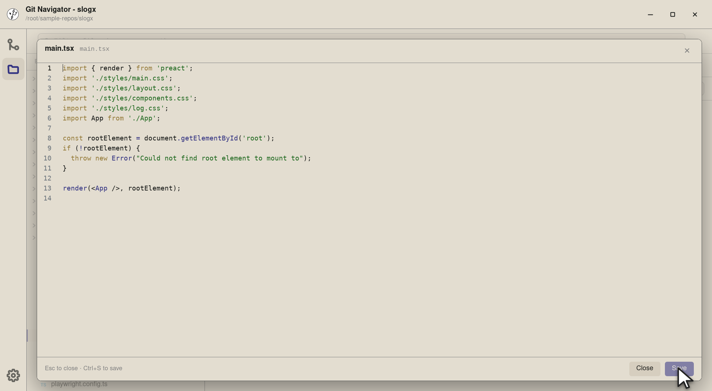
Step 3. Save is gated on a stale-write check: Git Navigator hashed the on-disk bytes when the overlay opened, and Save refuses if that hash no longer matches — so a concurrent edit from a teammate, an editor, or a tool run never gets silently overwritten. On a fresh hash it writes atomically (temp file + rename) and re-reads the new bytes.
Files at a glance
- Open the Files activity. Click the folder icon in the activity bar to swap from the commit graph to a worktree-scoped file tree. The tree follows the active worktree.
- Read the badges. The explorer header counts dirty files across the repo. Each row carries an inline M / A / ? / conflict badge so you can scan for what changed.
- Select to preview. Click a modified file and the preview opens straight into the diff. Clean files land in a CodeMirror file view; markdown and HTML add a side-by-side preview.
- Search by name or content. Type into the search box for a filename filter. Click the Aa toggle to flip the same query into a
git grepwith results grouped by file.
Frequently asked questions
Is the File Explorer worktree-aware?
Yes. The tree always shows the active worktree's files, and the worktree selector in the explorer toolbar lets you switch without leaving the panel. Status badges, search results, and the preview pane all re-target the new worktree together.
What does clicking a modified file actually open?
The diff view — Git Navigator picks a default view per file based on its status. Modified, added, and removed files open in diff; conflicted files open in the conflict resolver; markdown and HTML default to the side-by-side preview; everything else opens in the CodeMirror file view. You can switch views from the strip above the preview at any time.
How is content search different from filename filter?
Filename filter is a path-based filter on the in-memory tree — instant, but it only matches paths. Content search shells out to git grep, runs against your tracked files, and returns line/column matches grouped by file. The same input box drives both; the Aa / abc toggle switches modes and preserves the query.
Does the explorer handle ignored files and submodules?
Yes. Ignored entries are dimmed in the tree so they don't crowd your view, and git submodules render with a submodule badge so you know what you're clicking into. The explorer also follows secondary worktrees, so dirty state in linked worktrees stays scoped correctly.
Can I edit files from the preview pane?
Yes — clean and dirty files alike can be edited inline with a stale-write guard: Git Navigator reads the file's on-disk hash at open time and only saves if it still matches, so you can't accidentally overwrite a change you didn't see.